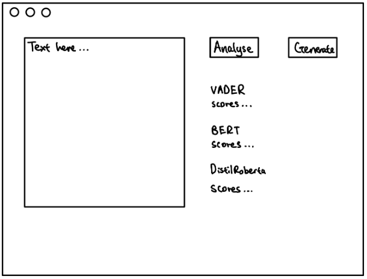
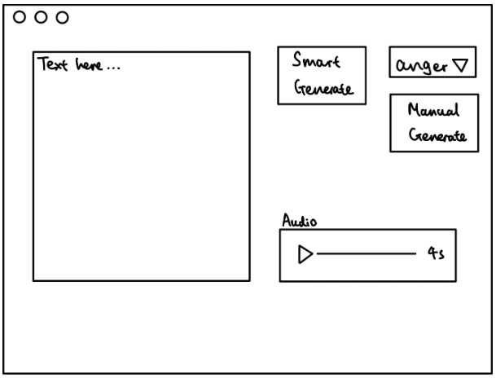
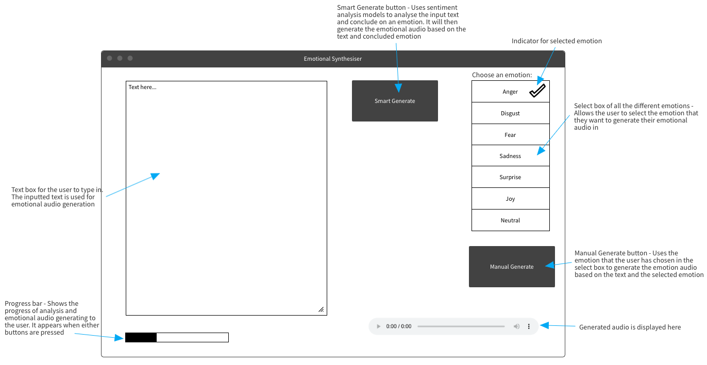

The UI/UX UI Design
Design Strategy
A satisfactory user experience is the utmost priority for our product. After the diagnosis of MND, patients’ control of muscle movements will continue to deteriorate. Hence, it is essential for our software to be easy to use with minimal effort in order for it to tackle one of our key goals.
Design Principles
Simplicity
For a simple design, we have decided only to have one main page, where everything is displayed. This allows simpler navigation between different processes. The page will be split into different columns and each column will be responsible for the different functions
Consistency
To keep our design consistent, we will ensure that:
- All buttons are the same size and style.
- All text are the same size, colour and font.
- The system is split into equal sized columns and padding for different functionalities.
Clarity
The design should make all options and information understandable. Hence, we will make sure that the empty text box has visible prompts that instruct the user to input the text inside to generate the emotional audio.
While the audio is being generated, we will create a loading prompt on the screen which informs the user that the audio is currently being generated. This will not mislead the user into thinking that their actions have no effect or the web application has frozen.
Visibility
- Functions are grouped together in column. Different functions are kept in separate columns
- Buttons are large with clear labels
- Emotions are labelled with different emojis for visual aid
Efficiency
We have designed the system to allow users to accomplish their goal of generating emotional audio with the least amount of effort. The complicated processes of sentiment analysis and emotional audio generation are abstracted away from the user and streamlined to require as few steps as possible. Finally, the audio file should be presented clearly to the user.
Feedback
Users should receive immediate and clear feedback after any interaction. After submitting text for audio generation, users should see an indication that the system is processing their request. Once the audio is generated, there should be a clear notification or change in the UI to reflect this.
Tolerance
Since the GUI is very simple, it is difficult for the user to make any mistakes. By using Streamlit, users can easily correct the text they have inputted without having to start over through the undo and redo functions.
Structure
We have organised the UI purposefully in a meaningful and useful way based on clear, consistent functions that are apparent and recognizable to users. Our application will logically group related options and information, such as keeping all functions related to manual generation together in the same web application column
Hand-drawn sketches
This is version 1. This only contains the sentiment analysis function and audio generation. This two functions combined is the smart generate function in later versions

This is version 2. It has now combined the analysis and generate buttons from the previous version into a smart generation function. Additionally, it also contains an emotion select box and manual audio generation function that allows the user to select the emotion of their text. When the audio is generated, it will update the application, allowing the user to play the audio
Online Interactive Wireframe
This is the online interactive wireframe, which is our final UI version. It contains a progress bar that shows the progress of audio generation to keep users informed. It also has a well-designed audio playback function that allows the user to start/pause the audio.
